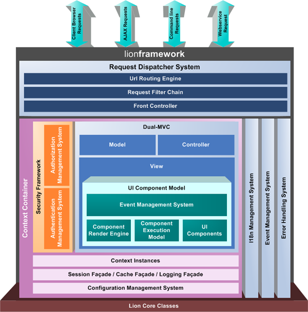
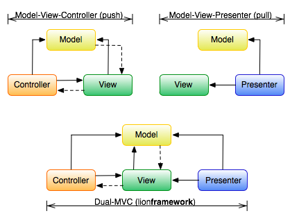

<table cellpadding="10" cellspacing="0" width="100%" border="0"><tr><td valign="top">
<div><a name=""></a><h1>Lion Architecture</h1>
  <div class="ref-purpose">The whole picture</div>
 <div class="ref-synopsis"></div>
<h2>Table of Contents</h2>
<ul>

<a href="../Lion/tutorial_Lion.Architecture.pkg.html#architecture_overview">Architecture overview</a><br />

<a href="../Lion/tutorial_Lion.Architecture.pkg.html#request_dispatcher">The Request Dispatcher</a><br />

&nbsp;&nbsp;&nbsp;<a href="../Lion/tutorial_Lion.Architecture.pkg.html#request_dispatcher.url_routing_system">The Url Routing Engine</a><br />

&nbsp;&nbsp;&nbsp;<a href="../Lion/tutorial_Lion.Architecture.pkg.html#request_dispatcher.request_filter_chain">The Request Filter Chain</a><br />

&nbsp;&nbsp;&nbsp;<a href="../Lion/tutorial_Lion.Architecture.pkg.html#request_dispatcher.front_controller">The Front Controller</a><br />

<a href="../Lion/tutorial_Lion.Architecture.pkg.html#context_container">The Context Container</a><br />

&nbsp;&nbsp;&nbsp;<a href="../Lion/tutorial_Lion.Architecture.pkg.html#context_container.managed_instances">Context Instances</a><br />

&nbsp;&nbsp;&nbsp;<a href="../Lion/tutorial_Lion.Architecture.pkg.html#context_container.security">The Security Framework</a><br />

&nbsp;&nbsp;&nbsp;<a href="../Lion/tutorial_Lion.Architecture.pkg.html#context_container.facades">Session, Cache and Logging facades</a><br />

&nbsp;&nbsp;&nbsp;<a href="../Lion/tutorial_Lion.Architecture.pkg.html#context_container.configuration">The Configuration Management System</a><br />

<a href="../Lion/tutorial_Lion.Architecture.pkg.html#dual_mvc">The Dual-MVC</a><br />

<a href="../Lion/tutorial_Lion.Architecture.pkg.html#lion_modules">General purpose libraries</a><br />

&nbsp;&nbsp;&nbsp;<a href="../Lion/tutorial_Lion.Architecture.pkg.html#lion_modules.I18n">The I18n System</a><br />

&nbsp;&nbsp;&nbsp;<a href="../Lion/tutorial_Lion.Architecture.pkg.html#lion_modules.event_management_system">The Event Management System</a><br />

&nbsp;&nbsp;&nbsp;<a href="../Lion/tutorial_Lion.Architecture.pkg.html#lion_modules.stream_wrapper_module">The Stream Wrapper Module</a><br />

&nbsp;&nbsp;&nbsp;<a href="../Lion/tutorial_Lion.Architecture.pkg.html#lion_modules.error_management_system">The Error Management System</a><br />
</ul>

 <p></p>
 <span><a name="architecture_overview"></a><h2>Architecture overview</h2><p>Lion is compounded by 3 main pieces:</p>
  <p><ul><li><strong>The Request Dispatcher System</strong>: The most in top layer just in front of the client. This is the one in charge of request handling tasks.</li>
    <li><strong>The Context Container</strong>: This layer represents the application itself. All the application specific logic is contained within this layer.</li>
    <li><strong>The Dual MVC</strong>: A combination of a MVC and a MVP together. MVC gives the framework a clear layer separation while MVP eases the creation of rich/ajax based user interfaces.</li></ul></p>
  <p>Apart from that, there are a bundle of general purpose libraries and classes used by all the framework, such the error handling module, the I18n system and the event management system.</p>
  <p></p></span>
 <span><a name="request_dispatcher"></a><h2>The Request Dispatcher</h2><p>The request dispatcher system is one of the lion key parts. As mentioned, is the most in top layer listening for client requests.<br />
  It has been designed and optimized to be as lightweight as possible due to the execution frequency that it represents.</p>
  <p>The Request Dispatcher System is compounded by 3 main parts:</p>
  <a name="request_dispatcher.url_routing_system"></a><h3>The Url Routing Engine</h3><p>This is the Lion URL rewriting engine, delegating the URL parsing from the webserver to Lion itself.<br />
    Different URL formats accepted by Lion are specified in route definitions. Each route describes how to map an URL in terms of Lion components, it is: which action/controller has request the client side, which front controller will attend the request and which parameters will be passed as part of the request.<br />
    The url routing engine has also the capacity to perform the transformation in the oposited way, it is, to compose an URL as from the envolved components.</p>
    <p>For more information regarding the Url Routing Engine, please see the <a href="../Request/tutorial_Request.UrlRouting.pkg.html">URLs and Routes</a> section.</p><br />
  <a name="request_dispatcher.request_filter_chain"></a><h3>The Request Filter Chain</h3><p>This is an intercepting filter in top of the Front Controller.</p>
    <p>The intercepting filter is a pluggable mechanism to process common services in a standard manner without requiring changes to core request processing code.<br />
    The filters intercept incoming requests and outgoing responses, allowing preprocessing and post-processing.<br />
    Lion allows to add and remove these filters unobtrusively, without requiring changes to our existing code.</p>
    <p>For more information regarding the Request Filter Chain, please see the <a href="../Filter/tutorial_Filter.pkg.html">Request Intercepting Filters</a> section.</p><br />
  <a name="request_dispatcher.front_controller"></a><h3>The Front Controller</h3><p>The front controller provides a centralized entry point that controls and manages Web request handling. It's the initial point of contact for handling the request in terms of the application.<br />
    Of course, any filter within the associated filter chain will be executed before the front controller.</p> 
    <p>For more information regarding the Front Controller, please see the FrontController.pkg section.</p><br /></span>
 <span><a name="context_container"></a><h2>The Context Container</h2><p>Lion framework is organized by contexts, where each context represents a concrete application. At the very high level, a context is just a space where instances collaborate together without interfering with other contexts. i.e., a context manages his own session and cache, avoiding conflicts with other contexts running at the same time.</p>
  <a name="context_container.managed_instances"></a><h3>Context Instances</h3><p><i>Context instance</i> is the name that receives an instance managed by a context container in Lion framework. If you are familiar with Spring framework, <i>context instance</i> is more like the <i>bean</i> concept.</p>
    <p>To learn more about context instances and how they are managed by the context container, take a look at <a href="../Context/tutorial_Context.DependencyInjection.pkg.html">Dependency Injection</a></p><br />
  <a name="context_container.security"></a><h3>The Security Framework</h3><p>Lion has his own framework to handle security. The security layer is a session based RBAC (Role Based Access Control), where instances are protected by permissions and permissions are group by roles.</p>
    <p>For more information regarding the security layer, please see the <a href="../Security/tutorial_Security.pkg.html">Security in Lion</a> section.</p><br />
  <a name="context_container.facades"></a><h3>Session, Cache and Logging facades</h3><p>Well, Lion framework does not implement mechanism to handle the session, nor the cache nor the logging, but provides several interfaces to the most notable frameworks and libraries for that purpose.</p>
    <p>A context container has a method to retrieve each one, bound to each context</p>
    <p>For more information regarding the session facade, please see the <a href="../Session/tutorial_Session.pkg.html">The Session</a> section.</p>
    <p>For more information regarding the cache facade, please see the <a href="../Cache/tutorial_Cache.pkg.html">The Cache facade</a> section.</p>
    <p>For more information regarding the logging facade, please see the <a href="../Log/tutorial_Log.pkg.html">The Logging facade</a> section.</p><br />
  <a name="context_container.configuration"></a><h3>The Configuration Management System</h3><p>The Lion configuration system features an infrastructure opened for extension.<br />
    It's the way that Lion exposes to define the configuration parameters within an application context. Again, Lion integrates the configuration management system at context container level, it is, configuration parameters just affect to the instance within the same ampplication context where they are defined in</p>
    <p>For more information regarding the configuration management system, please see the <a href="../Configuration/tutorial_Configuration.pkg.html">Configuration</a> section.</p><br /></span>
 <span><a name="dual_mvc"></a><h2>The Dual-MVC</h2><p>Lion is compound by 2 different MVC approaches together:</p>
  <ul><li>The push-style MVC, which is the classic design pattern which decouples data access and business logic (model) from presentation layer (view) by introducing an intermediate component: the controller.</li>
    <li>The pull-style MVC, also known as component based, where the view is able to &quot;pull&quot; data from multiple controllers as needed. This approach eases the creation of rich web user interfaces.</li></ul>
  
  <p>To be concrete, the component based MVC is one of the major efforts invested in lion:<br />
  Lion component model is similar to the AWT GUI component model. It has events and properties just like the Swing component model. It also has containers that contain components, and that also are components that can be contained by other containers.<br />
  In that sense, the Lion component model is divorced from traditionals view layers. Lion view allows not just to define the interface look and feel but dyncamic behaviors.</p>
  <p>For more information regarding the Model-View-Controller, please see the <a href="../Lion/tutorial_Lion.MVC.pkg.html">Model-View-Controller</a> section.</p>
  <p>For more information regarding the Component based UI, please see the <a href="../View/Components/tutorial_View.ComponentModel.pkg.html">The Component Model</a> section.</p></span>
 <span><a name="lion_modules"></a><h2>General purpose libraries</h2><p>Lion has a bundle of general purpose libraries designed as helper to perform all the common tasks needed by the rest of layers, to highlight:</p>
  <p><ul><li>The I18n management system, in charge of all the I18n aspects of the application.</li>
    <li>The event management system, in charge of event broadcasting and listener callback executions.</li>
    <li>The stream wrapper module, easing the definition and management of stream wrappers.</li>
    <li>The error management system, a way to centralize and organize the error and exception handling.</li></ul></p>
  <a name="lion_modules.I18n"></a><h3>The I18n System</h3><p>Lion brings his own I18n framework, perfectly integrated within the rest of the architecture in order to use language specific literals wherever we prefer within our code.</p>
    <p>For more information regarding the I18n management system, please see the <a href="../I18n/tutorial_I18n.pkg.html">I18n</a> section.</p><br />
  <a name="lion_modules.event_management_system"></a><h3>The Event Management System</h3><p>todo</p>
    <p>For more information regarding the event management system, please see the Event.pkg section.</p><br />
  <a name="lion_modules.stream_wrapper_module"></a><h3>The Stream Wrapper Module</h3><p>todo</p>
    <p>For more information regarding the Stream Wrapper Module, please see the Stream.pkg section.</p><br />
  <a name="lion_modules.error_management_system"></a><h3>The Error Management System</h3><p>todo</p>
    <p>For more information regarding the error management system, please see the <a href="../Exception/tutorial_Exception.pkg.html">Exception management system</a> section.</p><br /></span></div>
      </td></tr></table>